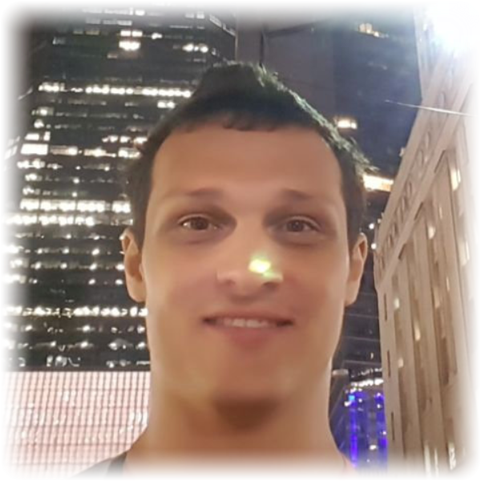
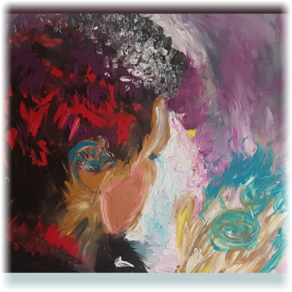
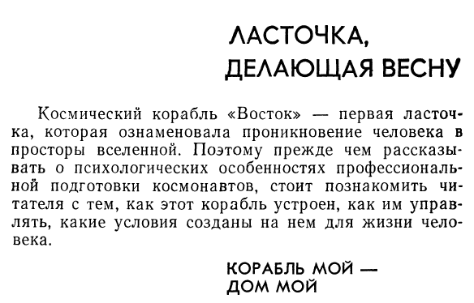

Welcome Stranger! ☘️


Hello! My name is Yuri and here you see the page for drafts, notes, links and other flow information.
My professional profile is a software and brain-computer interfaces engineering.
// My moto: everything is possile!
Привет! Меня зовут Юра и это моя домашняя страничка для различных заметок, черновых записей, ссылок и
прочей проходящей информации. Что касается моих профессиональных навыков то это написание программ и создание систем для мозг-компьютерного взаимодействия.
// Девиз: всё возможно!
contacts / resources / interactions:
| context |
data |
action |
| #social-net #blog #articles #dev |
|
read
pm
subscribe
share
|
Now more details. My full name is Yuri Konoplev also going as j0k, keytheorem,
NJ and etc... Definitely I like nicks and computer culture. It's my homepage so it's a place for drafts, notes and HTML experiments.
Some months ago I worked on social network developing at
Waves and also thought on
TuSion neuroapp and
brain-computers in wide. As I see today tusion was the most interesting application
to check and turning in right mental state if you know how to use it. Reborn as Silk Mind.
If you are searching for a big unicorn project to invest - just follow "Silk Mind" rabbit :)
By the way I like to program and to develop concepts and sometimes develop principles for
AML (abstract macro language) with details and examples. It's still a too unstructed repo for computer
programming language.
In vision I prefer cold and hot shower with cold at the end, flexibility mindflow, meditation, antipsychiatry,
active mindset shaping and jumping into actions inspired with dreams,
interesting future and perception of reality without any limits or bans.
Feel free to ask me for any questions, to mention any detail, to share any idea or just speak out loud.
I really regard the reality AS IS without any prelabeling for good/normal/bad orientation inside it.
Everything with sense is OK and I agree that it's forbidden to forbid in wide (Il est interdit d’interdire).
* all that was said above are my aspirations and I'm just only on the way.
Here is my public shared google spreadsheet/excel document to keep in touch in task-sense and keep the wave of
shared econony;) If you have any task for me, or we discussed something common and I still hadn't show any required reaction - plz push it. I will be glad both as you.
That homepage has an unstructed style with few comments and going to be in that state for some time.
glhf 🦋😚🧞💫
I really love stickers and see that stickers are mems. Section for stickers.
Section for life time tokens and DEX.
tusion and how tuses works:
moments:
- Talking with Edward Potter [NY, 2018]
- A new place for the Mind, tags:fly 2018
- Фрагменты путешествия на НеДеБройлевском по Луге, 2017
- DSD Raft Solutions: Спуск плотчеса на реку Мсту и первые часы на воде, 2016
- Чудное знакомство, чудо дня и открытие Дома
- ROMA [IT, 2018]
- backstage 0 [Zpsh, SPb, 2019]
- Момент! Hero Talk летит на финал Imagine Cup в Москву. 2016
- Интервью с Доктором Инкогнито [Nowhere, 2017]
- Tanglangquan demonstrations: небольшой отрывок из выступлений Кулака Богомола у Нарвских ворот [SPb, 2011]
- Bujinkan - Demo 1 - [Spb, 2019]
- Рита Ситалиева - Я? [Лирика]. [Moscow, July 2019]
music moments:
- Amy Winehouse - Back To Black life Limassol cover, [CYPRUS, 2017]
- Chappi, Street muz [SPb/RU, 2018]
- "Город которого нет", Бандитский Петербург, [Samovar, NY, 2018]
- "Небо над землёй" [Samovar, NY, 2018]
- Нам нужна одна победа, Я люблю тебя Россия [Samovar, NY, 2018]
- Until - Sting. Ivan's Algotrade Version [Limassol, CY, 2017]
- Выборг, Пассажир другой эпохи ЛМК Нон-Хьюман Энимал (Bloemfontein) [Квартирник, SPb, 2017]
- Сплин - Гандбол, Лимасол, 2017
- Сплин - Письмо (Бродский), Лимасол, 2017
- BADDA BOO - УЛЕТАЮ кавер по версии ЗПШ 2017
- 5nizza - vesna - Пятница - Весна Кавер ЗПШ 2017
- Flat music band (с Denis-ом) 2017
- Мама анархия. ЗПШ 2017. Айдар
- Bi-2 - Serebro. Би-2 - Серебро. Кавер. ЗПШ 2017
- ЗПШ 2017. кавер
- Надя. Пятый элемент ЗПШ", ЗПШ 2017, пятый этаж, "Чайка"
- DocStory. Мстинское ущелье. Давай за. Кавер Любэ
- VR 4K 360 video Russian Tourists in USA: brave Colorado river rafting. Vysotsky Высоцкий Цыганская
- Аквариум - Город золотой [Лимасол, 2017]
- Ленинград - Терминатор, [Лимасол, 2017]
- Музыка из фильма. Метро Петроградская. [Питер, 26.12.2015]
- !!! Фрагмент выступления в метро. [Питер, 2015]
- Наутилус — Я хочу быть с тобой [Лимасол, 2017]
- АукцЫон - Девушки Поют [Москва, 2019]
- АукцЫон - Птица, Мир тает. [Москва, 2019]
- Sunny song. NNK 5 Band. Песня и выступление. Добро и позитив // Moscow metro, 2019
- Танцы минус - Город - City (cover) // Saint-Петербург, metro, July 2019
- Серебрянная свадьба - Черная речка - Наташа Гаркавенко (кавер) // Чистые пруды, Moscow, July 2019
- Nnk_5_band - метро [Москва, 08.2019].
- Because - John Lennon Birthday [SPb, 2019.10.09].
- КОВИД - Наташа Гаркавенко [SPb, 2020.03.28].
performances:
- [2] Rammellzee future screens // Red Bull Arts, New York, 2018
- [1] Rammellzee future screens // Red Bull Arts, New York, 2018
- NY in spectacles, [NY, 2018]
- time of Chaos Construction 2016
- Into the night, квартирник Non-Human Animal, фрагмент, [Москва, 2019]
- Поиск пути на школе Социальной Инженерии 2017, [Лен. Область, 2017]
- Стихи. Кусочек вечера ЗПШ 2017 [база Восток, Лен.Обл., 2017]
AML language + IDE prototyping
hackathons & fu-projects:
psy sample & experiments:
developers, artists, scientists and people who feel:
-
Sean Larkin: WebPack, JS,
twich.tv
todo: to iframe it
-
Refik Anadol, media-artist, developer
-
Gavin Wood, ethereum co-founder, developer
-
Touinova Lyoubov, artist, insta:barbieblaster, insta:heartwin.office
-
Monica Gagliano #cognition #plants
-
Matt Sly homepage. Matt is a FutureMe.Org service creator. #life #dream #feel #I #You
-
Douglas Crockford homepage. Douglas is a JSON format creator (JavaScript Object Notation). #js #json #dev #cs
-
Roy T. Fielding homepage. Roy is a REST architector ~creator both as HTTP early-commiter. Roy is also Apache co-founder and director of the Apache Software Foundation. Roy's CV, architecture dissertation. #rest #dev #cs
-
Roy T. Fielding
BREAK | BETTER : TUTORIALS, SIDE-PROJECTS, AND DATA-DRIVEN STORYTELLING #dev #web
-
Yann LeCun
Neural Computer Scientist #dev #cnn #neural
developers and software engineers:
- Konrad Hałas - software engineer, speaker and trainer
- Julian Dyke - an independent database consultant specialising in Oracle performance tuning and high availability including RAC and Data Guard.
- Thomas Knoll - startup & ideas star
architecture:
- 3XN - my liebe architecture company:) `We believe that architecute shapes behavior.`
cool and classic social mechanics:
best services:
materials:
- Guide For The Unemployed But Not Helpless at anarplex.net
finance section:
- Finance - the world's real-time list of billionaires
visual / flow / dataflow programming paradigm materials:
Good tries, starts & passion
dev arch quotes/цитатки про архитектуру:
-
#dev Закон Конвея.
Любая организация, разрабатывающая систему, невольно будет формировать дизайн, структура которого повторяет структуру взаимодействий
внутри этой организации. // Мартин Роберт "Чистая Ахитектура. Искусство разработки программного обеспечения", СПб.::Питер, 2019, ISBN: 978-5-4461-0772-8
-
#dev #arch хорошая архитектура оставляет возможности открытыми. // МР "ЧА", Гл16
-
#dev #arch Хорошая архитектуа позволит создать монолитную систему, развёртываемую как один файл,
а затем превратить её в набор независимых единиц развёртывания и далее в независимые службы и/или микрослужбы.
Позднее ... она должна позволить обратить всё вспять и вновь вернуться к монолитной структуре. // МР "ЧА", Гл16
-
#dev #arch Реализация бизнес-правил должна быть самым независимым кодом в системе, готовым к многократному использованию. // МР "ЧА", Гл20
-
#dev #arch Простота тестирования является характерным признаком хорошей архитектуры. // МР "ЧА", Гл23
-
#dev #arch Первое правило проектирования программного обеспечения - идёт ли речь о тестируемости или о чём-то ещё - всегда одно: не зависеть ни от чего, что может часто меняться. // МР "ЧА", Гл28
-
#life Учись на собственном примере отвергать пример иной. N!ko - Те, что знают
-
#brain #hypno Понятие транса. Транс - это сфокусированный луч внимания внутри нас самих, проникающий сквозь сознательные заслоны,
активизирующий бессознательные ресурсы и исключающий все внешние стимулы. Это определение я использую [Бэтти Эриксон] и его же многократно
повторял Эриксон.
-
#efficiency #biz [1>50] Одна законченная задача лучше 50 начатых. Малкольм Форбс (из книги book inside: личная эффективность, Ицхак Пинтосевич)
other motivate quotes / другие мотивационные цитаты:
-
Будьте на виду. Всё равно где. Дайте шанс случаю столкнуться с вами.
// Герри Беквит "Продавая незримое", Альпина, 2016
#worldview #sales
-
Свободу не получают. Свободу обретают.
// фильм "Мечтатели", реж. Бернардо Бертолуччи, 2003
#worldview #free
-
Человек меньше всего говорит правду, когда говорит о себе. Дайте ему маску и он скажем вам правду.
// Оскар Уаилд
#worldview #note #self
-
Существование невидимо для глаз.
// Антуан де Сент, Экзюпери
#worldview #note #existence
-
Stay Hungry Stay Foolish.
// Steve Jobs
#worldview #self-fulfillment #entrepreneurship
-
В психологии эстетики есть термин для обозначения момента, когда
тревога из-за встречи с чем-то новым сменяется удовольствием от его постижения.
Этот момент называется эстетическим озарением.
// Дерек Томпсон "Хит мейкеры. Наука популярности в эпоху развлечений", Азбука-Бизнес, Москва 2018
#psychology #esthetics
-
Но откуда вы знаете, что всё было именно так.
// Читатель
#note
-
яркое переживание настоящего момента - потрясающий источник вдохновения
// Ника Бауман "Практика фокусировок", стр. 77
#psychology #практикафокусировок
tasks on logic / логические задачки:
-
Имеется две верёвки. Не принципиально одинаковые они или различные. Каждая горит 1 час. Как измерить промежуток в 90 минут? (Верёвка может гореть неравномерно).
startup stories / истории стартапов:
fine news streams / хорошие информационные потоки:
- One thousand ways to make $1000 // F. C. Minaker // 1936
- Psychology and Space // Yu. Gagarin, V. Lebedev // Психология и космос // Гагарин и Лебедев // 1968
- Motivation notes // A. A. Shaluto // Заметки о мотивации // А. А. Шалыто
- Tao Te Ching // Laozi // Дао де дзин // Лао цзы [link]
cool last-fm waves:
-
Nuntos - Natasha Garkavenko | Yojo band
- Как сделать задачу работая при этом над эффективностью?
Записать в текстовый редактор задачу в формате:
[ ] - описание задачи: start:; plan:; finish:; real:; delta:;
например:
[+] - прочитать про классификацию X и выписать основные поинты: start:16:30; plan:20min; finish:17:10; real:40; delta:+20min;
или:
[+] - прочитать про классификацию X и выписать основные поинты: start:16:30; plan:20min; finish:16:40; real:10; delta:-10min;
Если величина дельты =0 или < 0, следовательно ты движешься быстрее запланированного. Если больше - => времени ушло больше чем ожидал. Идеально стремиться к 0. Вообщем метод хорош для тренировки точности в оценке времени и фокуса на задаче.
- Прямая спина - самое важное в создании и направленной деятельности.
